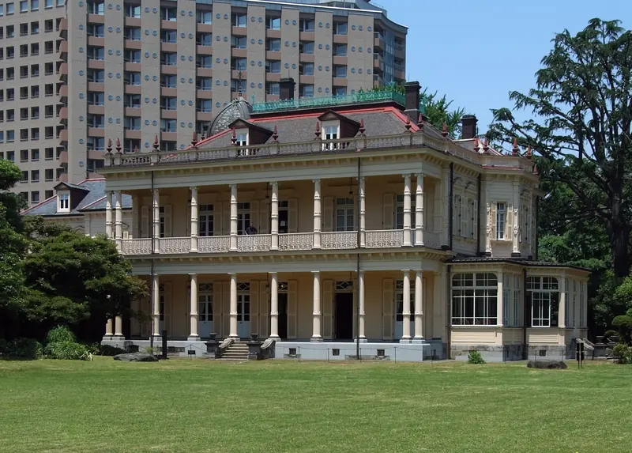

東京都 / 台東区
旧岩崎邸庭園 洋館
明治の洋館と和館がつながる邸宅。

写真：Wiiii · CC BY-SA 3.0 · 縮小・WebP変換
見どころ
岩崎久彌の本邸として建てられた洋館です。洋館・和館・撞球室が残り、異なる建築のつくりを同じ敷地で比べられます。洋館の装飾を見るだけでなく、和館へのつながりや庭に向いた面にも目を向けてみてください。[1][2]
- 南側のベランダと列柱
- ミントン製タイルの床
- 洋館と和館のつながり
構造・素材
骨組み・地下室木造・煉瓦
洋館は木造2階建てで、地下室は煉瓦造です。地上の木の骨組みと、地下の煉瓦を区別して記録しています。屋根にはスレートが使われています。[6]
南側のベランダタイル
1階のベランダの床には、英国ミントン製のタイルが使われています。床の模様と、上下階で異なる列柱の形を見比べられます。[1]
見学
公開施設 · 確認 2026-09-14
洋館・和館と、別棟の撞球室では公開範囲が異なります。地下通路と撞球室内は通常の自由見学ではなく、定員のあるガイドで案内されています。開催日と受付条件は公式案内をご確認ください。[1]
建物位置を照合（入口未照合）。地図のピンは入口を保証するものではありません。 建物輪郭と棟の対応を資料で照合しています。公開入口・現地測量による精度は未確認です。
近くの建築
出典・確認状況
基本情報と位置を別々に確認しています。全項目の検証完了を意味しません。
- 基本情報
- 一次資料と照合
- 資料確認日
- 2026-09-14
- 旧岩崎邸庭園東京都公園協会 · 2026-09-14 · 1896年の建設・設計者・所在地・園内施設
- 旧岩崎邸庭園 施設情報台東区 · 2026-09-14 · 洋館・撞球室と和館の設計者の区別
- 施設座標Wikipedia（座標のみ） · 2026-09-14 · 以前の施設代表点の記録。現在のピンは建物輪郭と公式の敷地案内を照合した位置を使う。
- 旧岩崎邸庭園 バリアフリーマップ（2024年1月）東京都公園協会 · 2026-09-14 · 敷地内の対象棟と周囲の施設配置を照合。図の表示中心を座標として流用しない。
- 建物輪郭（OpenStreetMap）OpenStreetMap contributors · 2026-09-14 · way 502703799 の建物輪郭。取得時点 2026-09-14T03:56:41Z。ODbL 1.0。入口・測量精度は保証しない。
- 旧岩崎家住宅 洋館文化庁 · 2026-09-14 · 木造2階建、煉瓦造地下室、スレート葺。文化財の地番と来園者向け住所は区別する。
未確認の項目
- 公開入口・現地測量による位置精度の確認
- 公開日・料金・予約条件の訪問直前の再確認
- 木材の樹種、煉瓦・スレートの産地と改修年代の部位対応